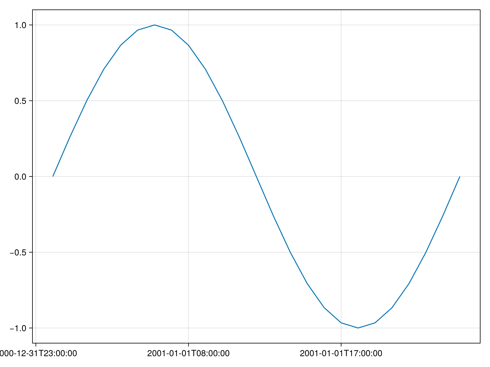

Basic interactive tplot
Function as tplot argument
using Dates
using DimensionalData
using SpacePhysicsMakie
using CairoMakie
t0 = DateTime(2001, 1, 1)
t1 = DateTime(2001, 1, 2)
function func(t0, t1)
x = t0:Hour(1):t1
y = @. sin(2pi * ((x - t0) / Day(1)))
DimArray(y, Ti(x))
end
f, axes = tplot(func, t0, t1)
Interactive tplot
Here we simulate a user interacting with the plot by progressively zooming out in time with tlims!.
dt = Day(1)
record(f, "interactive.mp4", 1:5; framerate=2) do n
tlims!(t0, t1 + n * dt)
sleep(0.5)
end;"interactive.mp4"